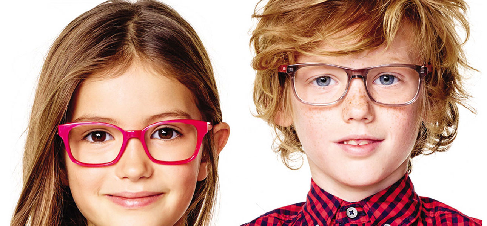

Немногие знают, что новорожденные дети имеют очень низкое зрение, которое в дальнейшем постепенно улучшается, совершенствуется и достигает нормальных показателей примерно к семилетнему возрасту.
Через глаз воспринимается 90% информации об окружающем мире, и дети осваивают окружающий мир прежде всего благодаря способности видеть. Именно в это время продолжает формироваться и укрепляется связь между глазом и корой головного мозга. Световая энергия, правильное восприятие образов окружающего мира глазом — все это стимулирует рост ребенка, его обменные процессы, нормализует и ускоряет психофизическое развитие с первого года жизни.
Отсутствие или неправильная коррекция дефектов рефракции (дальнозоркости, близорукости, астигматизма), косоглазия, врожденных заболеваний глаз, их поздняя диагностика могут привести к необратимым последствиям. Раннее офтальмологическое обследование позволит вовремя выявить отклонения от нормы и своевременно начать необходимое лечение. Природа распорядилась так, что если вовремя не поставить правильный диагноз и не провести лечение в возрасте до десяти лет, а в ряде случаев и до трех-пяти лет, то в будущем даже анатомически нормальный глаз так и не обретает способности к высокому зрению. Поэтому обследовать ребенка у детского офтальмолога, как правило, рекомендуют еще на первом году жизни: первый раз в 3-4 месяца — для исключения врожденной патологии, и второй раз в 8-12 месяцев — для выявления дефектов рефракции (близорукости, дальнозоркости, астигматизма), врожденного косоглазия и их своевременной коррекции.
В дальнейшем даже здоровому ребенку проводится полное офтальмологическое обследование в возрасте 3-х лет, затем 5-6 лет, далее ежегодно в течение всех школьных лет.
Наш центр располагает полным набором оборудования для диагностики и лечения глазных заболеваний у детей.
Современная аппаратура позволяет провести полное офтальмологическое обследование ребенка любого возраста, назначить правильную коррекцию (очки или контактные линзы), при необходимости провести комплексное лечение амблиопии, косоглазия, близорукости, используя как традиционные, так и современные компьютерные методики. Такие методы лечения позволяют быстро повысить остроту зрения, укрепить аккомодацию и устранить или уменьшить угол косоглазия.
Хорошее зрение в детстве — это залог полноценной жизни в будущем.
Аппаратное лечение в нашем центре, происходит на следующих аппаратах:
1. «АМО- АТОС с приставкой АМБЛИО -1»
Показания к применению:
- Амблиопия любой этиологии, спазм аккомодации
- Внутриглазные кровоизлияния (гифемы, гемофтальмы, иридоциклиты, имбибиции роговицы )
- Сосудистые заболевания глаз (закупорки центральной вены и ее ветвей, хориоретинальные дистрофии)
- Кератиты, увеиты, глаукома
- Любые заболевания глаз, сопровождающие отеком, воспаление
2. «ВИЗОТРОНИК»
— новый медицинский аппарат, созданный в России. Предназначен для безоперационной коррекции приобретенной близорукости. Быстро и без особых усилий повышает функциональные характеристики зрительной системы.
релаксатор «ВИЗОТРОНИК» — новейшая совместная разработка российских инженеров и врачей, которая уже доказала свою высокую эффективность.
В основе лечебного действия Визотроника лежит расслабляющее влияние на цилиарную мышцу положительных сферических и цилиндрических линз (эффект микрозатуманивания), а также призматических линз (эффект дивергентной дезаккомодации). Эффект релаксации цилиарной мышцы усиливается за счёт применения сферопризматических линз и призм с косым расположением линии вершина-основание.
Наши глаза воспринимают более 80% информации об окружаюшем мире. Её обьём во всех сферах жизнедеятельности стремительно растет. Но ешё быстрее растет число людей, теряюших зрение. Такова «плата» за технический прогресс и его влияние на экологию. Всего за 10 лет заболеваемость миопией у школьников выросла почти на 20%. Более 70% детей выходят из школ с приобретенной близорукостью.
Показаниями к применению:
• хроническое зрительное утомление;
• ложная близорукость;
• компьютерный зрительный синдром;
• приобретенная близорукость (как для улучшения функциональных показателей зрительной системы, так и с целью стабилизации процесса при её прогрессировании).
3.МЕТОДИКА ЛЕЧЕНИЯ АМБЛИОПИИ И КОСОГЛАЗИЯ С ПОМОЩЬЮ КОМПЬЮТЕРНОЙ ПРОГРАММЫ «КОНТУР»
Показаниями к применению:
-амблиопия различного генеза, в том числе при косоглазии, врожденной миопии и нистагме;
-нарушения бинокулярного зрения (в том числе, при наличии функциональной скотомы) при различных видах косоглазия и нистагма.
Противопоказаниями к применению программы являются острые воспалительные заболевания глаз. Не рекомендуется предъявлять мигающие изображения пациентам, склонным к эпилептиформным припадкам.
4. МЕЛЛОН-2 АПК-01У М2 Аппарат цветоимпульсной терапии
Цветоимпульсная терапия (ЦИТ) сочетает в себе профилактические и лечебные возможности цветотерапии (хромотерапии) и биоритмотерапии. Предназначен для профилактики и лечения заболеваний глаз, психо-неврологических расстройств, психосоматических заболеваний, а также коррекции психоэмоционального состояния человека методом ЦИТ.
Показания к применению:
Офтальмология: близорукость, дистрофия сетчатки, астигматизм, глаукома, катаракта, атрофия зрительного нерва, амблиопия, слабовидение, астенопия, спазм аккомодации.
5. Набор игровых программ Плеоптика 3 (6 игр) для лечения амблиопии
В набор входят программы "Тир", "Льдинка", "Крестики", "Галактика", версия 2. Эти программы предназначены для лечения амблиопии любой степени и любого вида у пациентов от 3-х лет и старше. Метод дает хорошие результаты и в случаях резко неустойчивой фиксации, когда многие другие способы лечения амблиопии оказываются неэффективными.
Игра "Тир" может использоваться уже в начальном периоде восстановления основных зрительных функций.
В игре "Льдинка" движущиеся на темном фоне яркие цветооппонентные объекты частично перекрываются и постепенно уменьшаются в размерах
"Льдинка" является развитием игры "Погоня", входящей в программу "eYe-P".
Игра "Крестики" является паттерн-стимулятором, в качестве периферического стимула в ней используется инвертирующееся шахматное поле
Игра "Галактика" является паттерн-стимулятором. Стимулом в ней служат две радиальные и кольцевые решетки, наложенные друг на друга со сдвигом
6. Аппарат для тренировки аккомодации РУЧЕЕК ТАК-6.3
Аппарат предназначен для тренировки аккомодации путем дискретного последовательного предъявления знаков на фиксированном расстоянии от глаза. Используется для лечения и стабилизации миопического процесса, снятия спазма аккомодации, для профилактики миопии (близорукости) при ослабленной аккомодации у детей и подростков; взрослыми пациентами — при начальной пресбиопии (дальнозоркости), а также при астенопии (зрительной усталости), обусловленной работой с компьютером, микроскопом и т.п. Может применяться для стимуляции органа зрения при амблиопии, гиперметропии, астигматизме, а также в качестве послеоперационного реабилитационного средства.
7. СПЕКЛ-М
Спекл-М» представляет собой лазерный аппарат, который применяют для лечения различного рода амблиопии на фоне врожденных или приобретенных нарушений прозрачности оптических сред глазного яблока (помутнениероговицы, фиброз стекловидного тела, посттравматическая и постувеальная катаракта), а также для терапии дисбинокулярной, анизометрической и рефракционной амблиопии в детском возрасте.
Методика применения лазерплеоптического лечения амблиопии имеет несколько преимуществ перед обычным лечением, которое подразумевает слепящее световое раздражение макулярной области или общий засвет центральной зоны сетчатой оболочки красным или белым светом.
8. ФОРБИС
Основное назначение – исследование бинокулярных функций на близком расстоянии и диплоптическое лечение больных с косоглазием, астенопией, диплопией, с нарушением функции аккомодационного аппарата глаз.
Аппарат для диагностики по трем видам разделения полей зрения и диплоптического лечения косоглазия «ФОРБИС» является прибором для исследования и восстановления (тренировки) зрительных функций на близком расстоянии
Лечебные возможности:
1. Восстановление бинокулярного зрения методом разобщения аккомодации и конвергенции (аккомодационная нагрузка и релаксация), диплоптическое лечение;
2. Восстановление бинокулярного зрения при совмещении диплоптического способа лечения и способа стимуляции сенсорного аппарата глаз спекл-структурой лазерного излучения – лазердиплоптическое лечение;
3. Развитие фузионных резервов;
4. Тренировка относительной и абсолютной аккомодации.
9. ЭСОМ-Комет электростимулятор офтальмологический микропроцессорный
Показания:
• атрофии зрительного нерва различного генеза;
• дистрофические поражения сетчатки;
• спазм аккомодации, миопия;
• амблиопия;
• косоглазие;
• птоз;
• пресбиопия;
• врожденная патология зрительного анализатора;
• катаракта (для предупреждения развития зрительной депривации и подготовки к операции);
• профилактическая стимуляция лиц, работающих в режиме зрительного напряжения.
• Процедура стимуляции
В диагностическом режиме аппарата ЭСОМ-Комет определяется порог электрической чувствительности (в мкА) и электролабильность (Гц).